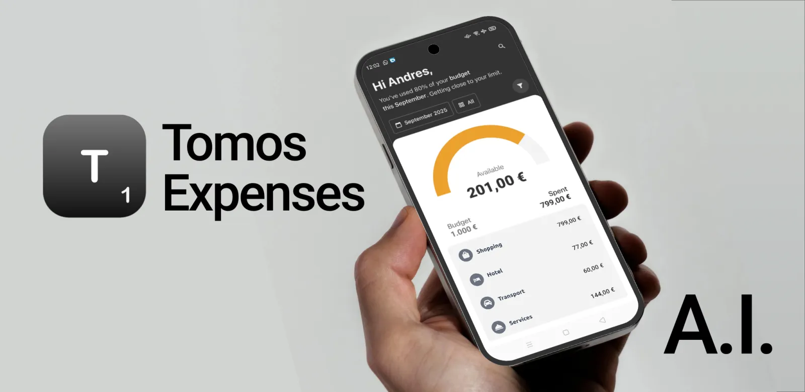

T1 Expenses scans, analyzes, and organizes receipts, invoices, and vouchers with the power of artificial intelligence — white-labeled under your own brand.

Unlike traditional expense apps, T1 Expenses learns from your habits. The result: your clients save time, reduce errors, and gain crystal-clear financial visibility.
Capture multiple receipts in a row with the Scan menu.
Even endless receipts are split and analyzed automatically with Segments mode.
Add non-scanned receipts manually so nothing slips through the cracks.
Forward PDF expenses received by email to a dedicated you@t1.tomos.io address.
AI highlights spending patterns, detects anomalies, and generates trends.
From merchant to line items, search through the contents of every receipt.
Export data instantly and find any item or transaction in seconds.
Simplify expense management. Focus on growing your business.
"T1 Expenses saves us two days per month on expense management."
"This app is a game changer! Intuitive design and fantastic insights."
"The easy-to-use app helps me manage my professional expenses really fast."
Open the Scan menu, point your camera at the receipt, and T1 automatically detects, crops, and reads its contents — no manual typing needed.
Yes, a free account takes less than a minute and keeps your receipts synced securely across every device.
Yes. Categories are fully customizable so your reports match the way your practice already works.
Absolutely — export any period as CSV, ready to import into your accounting software.
All data is encrypted in transit and at rest, hosted in the EU, and never sold to third parties.
Receipt scanning, long-receipt segmenting, manual entry, email forwarding, AI insights, full-text search, and one-click exports.
T1 Expenses is available for iOS and Android. Ask your TOMOS partner for the download link — or contact us directly.
Become a TOMOS partner and put T1 Expenses under your own brand.
Become a partner →